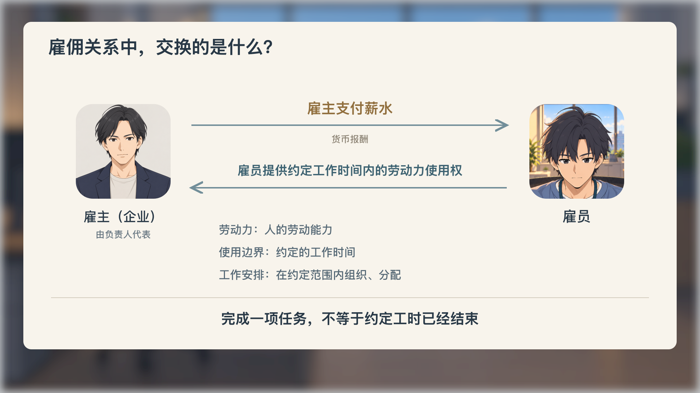
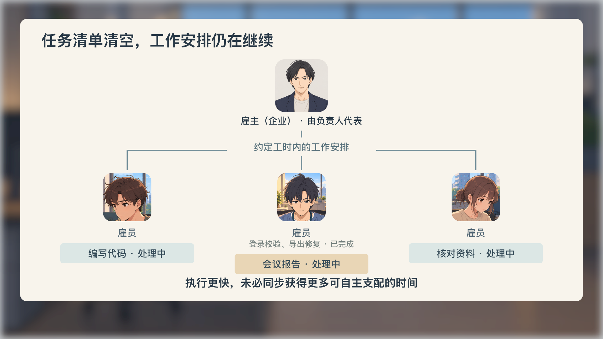

<!doctype html><html lang="zh-CN"><meta charset="utf-8"><meta name="viewport" content="width=device-width,initial-scale=1"><title>03 · 正面演出与雇佣关系 · v04</title><style>*{box-sizing:border-box}body{background:#e8e4dc;color:#263542;font:16px/1.6 system-ui;margin:0}main{max-width:1600px;padding:14px;margin:auto}h1{font-size:23px;margin:0 0 9px}p{margin:8px 0;color:#64737c}#stage{line-height:0;background:#d4d7da;box-shadow:0 8px 24px #26354222;overflow:hidden}#stage svg{display:block;width:100%;height:auto}nav,.controls{display:flex;gap:8px;flex-wrap:wrap;margin:12px 0}button{font:inherit;padding:6px 12px;background:#faf7f0;border:1px solid #b5aa96;border-radius:6px;color:#263542;cursor:pointer}button[aria-pressed=true]{background:#d4e2df}input[type=range]{flex:1;min-width:180px}a{color:#766142;margin-right:20px}.gallery{display:grid;grid-template-columns:repeat(2,minmax(200px,1fr));gap:14px}.gallery img{width:100%}figure{margin:0;background:#faf7f0}figcaption{padding:7px 12px}#status{font-variant-numeric:tabular-nums;min-width:125px}</style><main><h1>03 · 正面演出与雇佣关系</h1><section id="stage" aria-label="03代表构图"></section><nav><button data-scene="exchange" aria-pressed="false">雇佣关系</button><button data-scene="completed" aria-pressed="false">14:00 · 发送完成</button><button data-scene="reply" aria-pressed="true">14:01 · 追加报告</button><button data-scene="turn" aria-pressed="false">视线预备</button><button data-scene="look" aria-pressed="false">看向同事</button><button data-scene="neighbors" aria-pressed="false">邻桌工作</button><button data-scene="typing" aria-pressed="false">继续输入</button><button data-scene="tree" aria-pressed="false">工作安排</button></nav><div class="controls"><button id="play">播放39秒构图预演</button><button id="motion" aria-pressed="false">局部动作预览</button><input id="seek" type="range" min="0" max="39" step="0.033333" value="14"><output id="status">14.00 / 39.00</output></div><p>整幅绘稿承载人物与工位；文字独立排版。当前为构图与有限关键态预演，整章成片及全片仍待接入。</p><a href="README.md">制作与审核记录</a><a href="screen-copy.json">本次新增画面文字</a><a href="provenance/references.md">摄影与界面参考</a><a href="../../../actions/film/preview.html">当前全片</a><h2>代表构图</h2><div class="gallery"><figure><figcaption>雇佣关系</figcaption></figure><figure><figcaption>14:00 · 发送完成</figcaption></figure><figure><figcaption>14:01 · 追加报告</figcaption></figure><figure><figcaption>看向同事</figcaption></figure><figure><figcaption>邻桌工作</figcaption></figure><figure><figcaption>继续输入</figcaption></figure><figure><figcaption>工作安排</figcaption></figure></div></main><script type="module" src="player.mjs"></script></html>